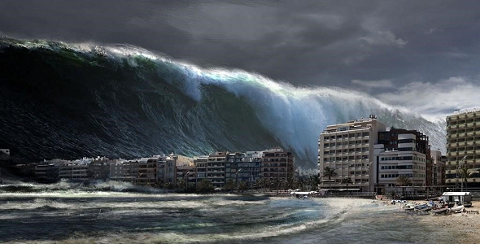
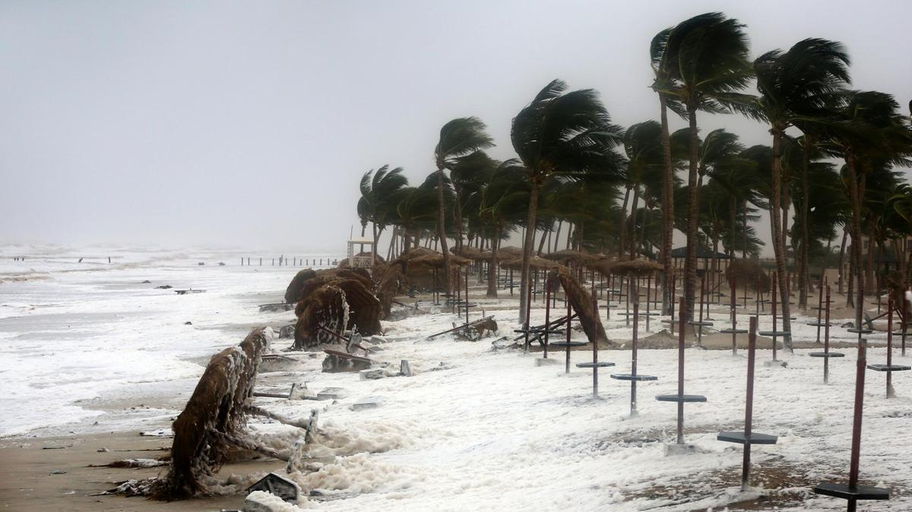
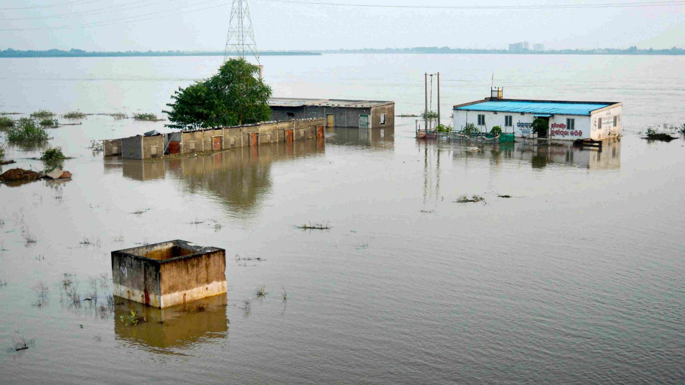
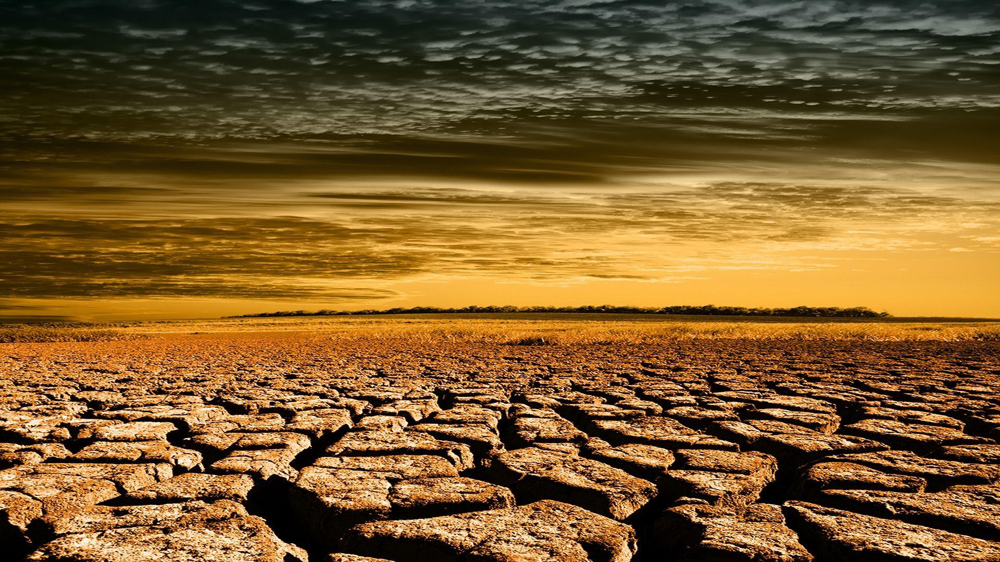

Earthquakes - A sudden violent shaking of the ground
Earthquake Preparedness
Staying safe indoors
DROP, COVER and HOLD ON!
If you are in bed, stay there, curl up and hold on, and cover your head.
Stay indoors until the shaking stops and you are sure it is safe to exit.
Be aware that smoke alarms and sprinkler systems frequently go off in buildings during an earthquake, even if there is no fire.
If you smell gas, get out of the house and move as far away as possible.
Before you leave any building check to make sure that there is no debris from the building that could fall on you.
Staying safe Outdoors
Find a clear spot and drop to the ground. Stay there until the shaking stops.
Try to get as far away from buildings, power lines, trees, and streetlights as possible.
If you're in a vehicle, pull over to a clear location and stop. Avoid bridges, overpasses and power lines if possible.
Stay inside with your seatbelt fastened until the shaking stops.
After the shaking has stopped, drive on carefully, avoiding bridges and ramps that may have been damaged.
If a power line falls on your vehicle, do not get out. Wait for assistance.
Tsunami - a long, high sea wave caused by an earthquake

Tsunami Preparedness
If You Feel a Strong Coastal Earthquake
DROP, COVER and HOLD ON!
When the shaking stops, gather members of your household and review your evacuation plan. A tsunami may be coming within minutes.
Take your emergency kit. Having supplies will make you more comfortable during the evacuation.
If you evacuate, take your animals with you. If it is not safe for you, it is not safe for them.
Get to higher ground as far inland as possible. Watching a tsunami from the beach or cliffs could put you in grave danger. If you can see the wave, you are too close to escape it.
Avoid downed power lines and stay away from buildings and bridges from which heavy objects might fall during an aftershock.
Staying Safe After a Tsunami
Let friends and family know you’re safe
If evacuated, return only when authorities say it is safe to do so.
Watch animals closely and keep them under your direct control.
Check food supplies. Any food that has come in contact with floodwater may be contaminated and should be thrown out.
Stay out of damaged buildings and those surrounded by water. Tsunami water, like floodwater, can undermine foundations, causing buildings to sink, floors to crack, or walls to collapse.
Watch out for fallen power lines or broken gas lines and report them to the utility company immediately.
Cyclone- a system of winds rotating inwards to an area of low barometric pressure

Cyclone Preparedness
Preparing for a Cyclone
Bring your family into the strongest part of the house
Turn off all electricity, gas and water; unplug all appliances.
Keep your emergency kit close at hand.
If you evacuate, take your animals with you. If it is not safe for you, it is not safe for them.
Keep listening to the radio for cyclone updates.
If the building begins to break up, shelter under a strong table, bench or heavy mattress.
Staying Safe After a Cyclone
Let friends and family know you’re safe
If evacuated, return only when authorities say it is safe to do so.
Watch animals closely and keep them under your direct control.
Watch out for fallen power lines or broken gas lines and report them to the utility company immediately.
Floods - an overflow of water that submerges dry land

Flood Preparedness
Preparing for a Flood
Contact the local geologist or town planning department or meteorology department to find out if your home is located in a flash-flood-prone area or landslide-prone area.
Identify potential home hazards and know how to secure or protect them before the flood strikes. Be prepared to turn off electrical power when there is standing water, fallen power lines etc. Turn off gas and water supplies before you evacuate. Secure structurally unstable building materials.
Buy a fire extinguisher and make sure your family knows where it is and how to use it.
Buy and install sump pumps with back-up power.
Have a licensed electrician to raise electric components (switches, sockets, circuit breakers and wiring) at least 12" above your home's projected flood elevation.
For drains, toilets, and other sewer connections, install backflow valves or plugs to prevent floodwaters from entering.
Emergency Supplies You Will Need
Several clean containers for water, large enough for a 3-5 day supply of water (about five gallons for each person).
A 3-5 day supply of non-perishable food and a non-electric can opener.
A first aid kit and manual and prescription medicines and special medical needs.
A battery-powered radio, flashlights, and extra batteries.
Sleeping bags or extra blankets.
Water-purifying supplies, such as chlorine or iodine tablets or unscented, ordinary household chlorine bleach.
Baby food and/or prepared formula, diapers, and other baby supplies.
An emergency kit for your car with food, flares, booster cables, maps, tools, a first aid kit, fire extinguisher, sleeping bags, etc.
Preparing to Evacuate
Fill your clean water containers.
Fill your vehicle's gas tank and make sure the emergency kit for your car is ready.
Tune in the radio or television for weather updates.
Put livestock and family pets in a safe area. Due to food and sanitation requirements, emergency shelters cannot accept animals.
Adjust the thermostat on refrigerators and freezers to the coolest possible temperature.
Review your emergency plans and supplies, checking to see if any items are missing.
Evacuation Guide
Take only essential items with you.
If you have time, turn off the gas, electricity, and water.
Disconnect appliances to prevent electrical shock when power is restored.
Follow the designated evacuation routes and expect heavy traffic.
Do not attempt to drive or walk across creeks or flooded roads.
Drought - it is a lack of freshwater resources to meet standard water demand

Drought Preparedness
Preparing for a Drought
Plant native and/or drought-tolerant grasses, ground covers, shrubs and trees. They don't need water as frequently and usually will survive a dry period without watering.
Use mulch to retain moisture in the soil.
Install water efficient irrigation devices, such as micro and drip irrigation and soaker hoses.
Never pour water down the drain when there may be another use for it. For example, use it to water your indoor plants or garden.
Use appliances that are more energy and water efficient.